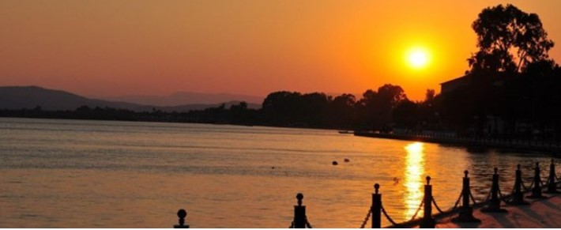
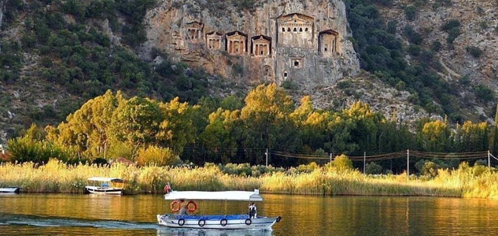
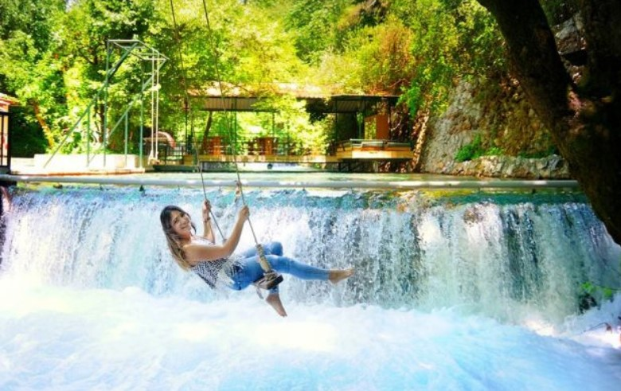
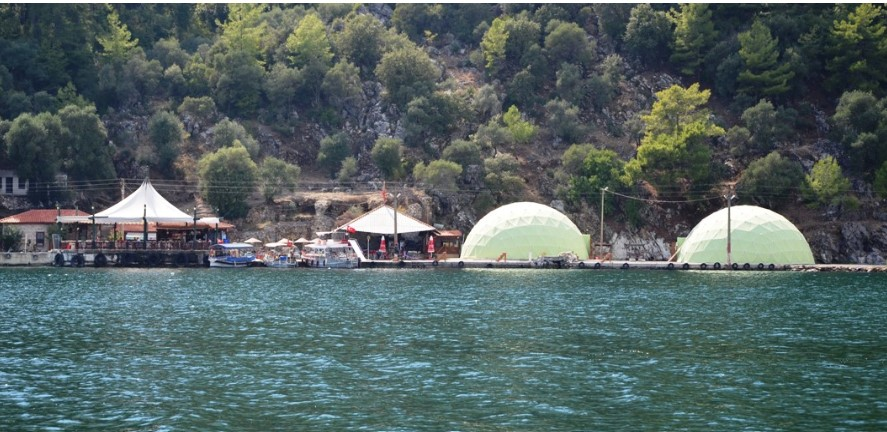

MEMLEKETİM
KÖYCEĞİZ GÖLÜ

Muğla'da bakir doğası ile dikkat çeken 180 kuş türünü ağırlayan, 52 kilometrekare yüzölçümüne sahip Köyceğiz Gölü, görselliğiyle beğeni toplarken; huzur arayanların da adresi oluyor. Su sporu yapmanın mümkün olduğu göl, özellikle kürek takımlarının uğrak yerlerinden biri olarak öne çıkıyor. Tabloları aratmayan güzelliğiyle Köyceğiz Gölü, doğa tutkunları ve fotoğraf sanatçılarının da tercih ettiği adreslerin başında geliyor.
Kaunos Kral Mezarlığı

Kaunos Antik Kenti, efsanevi kral Kaunos tarafından kurulmuş. Karya kenti olarak kurulan ancak zaman içinde pek çok etkiye maruz kalan Kaunos’ta kaya mezarları, hamam, agora, 5 bin kişi kapasiteli antik tiyatro ve kutsal tapınağı ile 3 bin yıllık tarih gözler önüne serilmiş.
Yuvarlakçay Vadisi

Muğla'nın "Gizli Cenneti" olarak tanımlanan Yuvarlakçay Vadisi, şırıl şırıl akan şelalesi ve güzelliğiyle turistlerin akın akın ziyarete geldiği mükemmel yerlerden biri
Sultaniye Kaplıcaları

Sultaniye Türkiye’nin en yüksek radyoaktivitesi olan kaplıcasıdır. (98.3) 39 Derece sıcaklıktaki su kalsiyum klorür, kalsiyum sülfat, kalsiyum sülfür ve radon içermektedir. Romatizma, siyatik yanında cilt ve kadın hastalıklarına da iyi gelmektedir. Ama asıl önemlisi radyoaktivite yüksekliği yoluyla rehabilite edici özelliğinin varlığıdır. Kaplıcanın Kaunos’lular tarafından bundan iki bin yıl önce açıldığı belirlenmektedir. Çevredeki hastane kalıntıları da bunu doğruluyor. Büyük banyonun yanından çıkan kaynak suyu da içildiğinde çeşitli iç hastalıklarını iyileştiriyor.